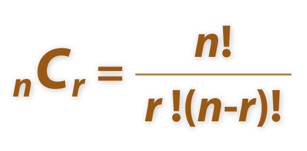
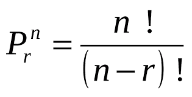
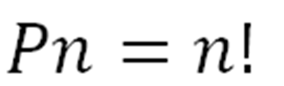
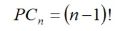
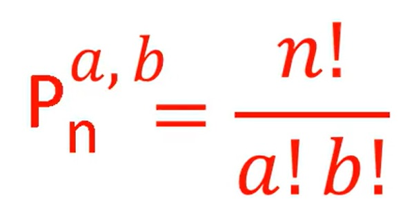

Combinación
La combinación es una forma de seleccionar elementos de un conjunto donde el orden no importa. El número de combinaciones de un conjunto de n elementos tomados r a la vez está dado por la fórmula:
C(n, r) = n! / [r! * (n - r)!]
La combinación es una forma de seleccionar elementos de un conjunto donde el orden no importa. El número de combinaciones de un conjunto de n elementos tomados r a la vez está dado por la fórmula:
C(n, r) = n! / [r! * (n - r)!]
La permutación es una forma de ordenar todos los miembros de un conjunto en un orden o secuencia. El número de permutaciones de un conjunto de n elementos tomados r a la vez está dado por la fórmula:
P(n, r) = n! / (n - r)!
La inducción matemática es una técnica de demostración utilizada en matemáticas. Se utiliza para demostrar que una propiedad es verdadera para todos los números naturales. La prueba por inducción consta de dos pasos:
La recursión es una técnica de programación donde una función se llama a sí misma. Se utiliza para resolver problemas que pueden dividirse en subproblemas más pequeños del mismo tipo. Un ejemplo clásico de recursión es el cálculo del factorial de un número:
factorial(n) = n * factorial(n - 1)
El ordenamiento es el proceso de organizar datos en un orden particular. Existen varios algoritmos de ordenamiento, entre los más comunes se encuentran:
El Ordenamiento de burbuja (BubbleSort) es un algoritmo de ordenamiento simple. El mismo funciona revisando cada elemento de la lista a ordenar con el que le sigue, cambiándolos de posición si están en un orden incorrecto (n>n+1). Es necesario repetir este proceso varias veces hasta que no se necesiten más cambios, lo que significa que la lista quedó ordenada. Un ejemplo de ordenamiento con bubblesort sería:

El método de ordenamiento de inserción actua recorriendo la lista a ordenar, tomando el elemento actual e insertándolo donde debería comparandoló entre los que ya ha recorrido. Esta es una muestra mas clara del Método de ordenamiento por Inserción:

El Método de ordenamiento por selección consiste en buscar el menor entre todos los elementos no ordenados y colocarlo al principio, luego se debe repetir lo mismo con los restantes (no se tienen en cuenta los ya ordenados). Aquí una muestra más visual del Método:

Al igual que el ordenamiento por mezcla, el ordenamiento rápido es un algoritmo divide y ganarás, el mismo funciona seleccionando un elemento como pivot y dividiendo la matriz dada alrededor del pivot elegido. Hay muchas versiones diferentes de ordenamiento rápido que eligen pivotar de diferentes maneras.
1. Elegir siempre el primer elemento como pivot.
2. Elegir siempre el último elemento como pivot.
3. Elegir un elemento aleatorio como pivot.
4. Elegir la mitad como pivot.
El proceso llevado a cabo en el ordenamiento rápido es la partición, el objetivo de las mismas es, dado una matriz A y un elemento x de la matriz como pivot, poner x en su posición correcta en la matriz ordenada y poner todos los elementos menores que x antes de x, y poner todos los elementos mayores que x después de x. Aquí hay una demostración grafica del proceso llevado a cabo:

El Método de ordenamiento por mezcla tiene un funcionamiento muy particular, primero debemos saber que si la longitud de la lista es 0 ó 1 ya está ordenada, En otro caso: el algoritmo deberá dividir la lista desordenada en dos sublistas de aproximadamente la mitad del tamaño, luego ordenará cada sublista recursivamente aplicando el ordenamiento por mezcla y por ultimo mezcla las dos sublistas en una sola lista ordenada. Esta es una demostración gráfica del mismo:

El Método de Ordenamiento del montón es similar a la clasificación por selección donde primero encontramos el elemento máximo y lo colocamos al final. Repetimos el mismo proceso para el resto de elementos. Pero en el Método del montón debemos realizar previamente montones que son los que irán acomodandose con el algoritmo según cual es más grande de un lado o del otro del montón y al mismo tiempo, se irán eliminando y acomodando los elementos mayores en la lista. Aquí hay un ejemplo gráfico del proceso:

La búsqueda es el proceso de encontrar un elemento en un conjunto de datos. Existen varios algoritmos de búsqueda, entre los más comunes se encuentran:

Resultados:




Resultados:
Lista Ingresada:
Lista Ordenada:
| BubbleSort | InsertionSort | SelectionSort | QuickSort | MergeSort | ShellSort | HeapSort | |
|---|---|---|---|---|---|---|---|
| Elementos | |||||||
| Comparaciones | |||||||
| Intercambios | |||||||
| Tiempo |
Ingrese una lista ordenada de meno a mayor, caso contrario el metodo Binario y de interpolacion no funcionarán
Lista ingresada:
Indice:
| Lineal | Binaria | Interpolación | Hashing | |
|---|---|---|---|---|
| Elementos | ||||
| Comparaciones | ||||
| Tiempo |